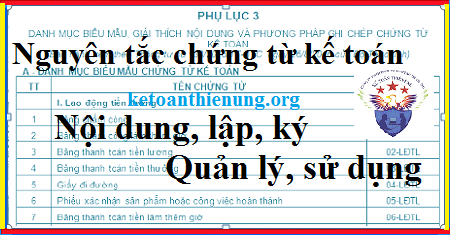

Nguyên tắc chứng từ kế toán như: Nuyên tắc Lập, ký chứng từ kế toán, nội dung trên chứng từ kế toán, chứng từ điện tử, quản lý, sử dụng chứng từ kế toán theo Luật kế toán mới nhất hiện hành.
- Chứng từ kế toán là những giấy tờ và vật mang tin phản ánh nghiệp vụ kinh tế, tài chính phát sinh và đã hoàn thành, làm căn cứ ghi sổ kế toán.
I. Quy định về Chứng từ kế toán:
1. Chứng từ kế toán phải được lập rõ ràng, đầy đủ, kịp thời, chính xác, dễ kiểm tra, kiểm soát và đối chiếu theo các nội dung quy định tại Điều 16 Luật kế toán, cụ thể như sau:
|
Nội dung chứng từ kế toán: 1. Chứng từ kế toán phải có các nội dung chủ yếu sau đây: a) Tên và số hiệu của chứng từ kế toán; b) Ngày, tháng, năm lập chứng từ kế toán; c) Tên, địa chỉ của cơ quan, tổ chức, đơn vị hoặc cá nhân lập chứng từ kế toán; d) Tên, địa chỉ của cơ quan, tổ chức, đơn vị hoặc cá nhân nhận chứng từ kế toán; đ) Nội dung nghiệp vụ kinh tế, tài chính phát sinh; e) Số lượng, đơn giá và số tiền của nghiệp vụ kinh tế, tài chính ghi bằng số; tổng số tiền của chứng từ kế toán dùng để thu, chi tiền ghi bằng số và bằng chữ; g) Chữ ký, họ và tên của người lập, người duyệt và những người có liên quan đến chứng từ kế toán. 2. Ngoài những nội dung chủ yếu của chứng từ kế toán quy định tại khoản 1 Điều này, chứng từ kế toán có thể có thêm những nội dung khác theo từng loại chứng từ. (Theo điều 16 Luật kế toán 88/2015/QH13) |
2. Đơn vị kế toán trong hoạt động kinh doanh được chủ động xây dựng, thiết kế biểu mẫu chứng từ kế toán nhưng phải đảm bảo đầy đủ các nội dung chủ yếu của chứng từ kế toán quy định tại khoản 1 Điều 16 Luật kế toán, phù hợp với đặc điểm hoạt động và yêu cầu quản lý của đơn vị mình trừ trường hợp pháp Luật có quy định khác.
3. Trường hợp người khiếm thị là người bị mù hoàn toàn thì khi ký chứng từ kế toán phải có người sáng mắt được phân công của đơn vị phát sinh chứng từ chứng kiến. Đối với người khiếm thị không bị mù hoàn toàn thì thực hiện ký chứng từ kế toán như quy định tại Luật kế toán.
4. Đơn vị kế toán sử dụng chứng từ điện tử theo quy định tại Điều 17 Luật kế toán thì được sử dụng chữ ký điện tử trong công tác kế toán. Chữ ký điện tử và việc sử dụng chữ ký điện tử được thực hiện theo quy định của Luật giao dịch điện tử.
|
Quy định về Chứng từ điện tử
1. Chứng từ điện tử được coi là chứng từ kế toán khi có các nội dung quy định tại Điều 16 của Luật này và được thể hiện dưới dạng dữ liệu điện tử, được mã hóa mà không bị thay đổi trong quá trình truyền qua mạng máy tính, mạng viễn thông hoặc trên vật mang tin như băng từ, đĩa từ, các loại thẻ thanh toán. 2. Chứng từ điện tử phải bảo đảm tính bảo mật và bảo toàn dữ liệu, thông tin trong quá trình sử dụng và lưu trữ; phải được quản lý, kiểm tra chống các hình thức lợi dụng khai thác, xâm nhập, sao chép, đánh cắp hoặc sử dụng chứng từ điện tử không đúng quy định. Chứng từ điện tử được quản lý như tài liệu kế toán ở dạng nguyên bản mà nó được tạo ra, gửi đi hoặc nhận nhưng phải có đủ thiết bị phù hợp để sử dụng. 3. Khi chứng từ bằng giấy được chuyển thành chứng từ điện tử để giao dịch, thanh toán hoặc ngược lại thì chứng từ điện tử có giá trị để thực hiện nghiệp vụ kinh tế, tài chính đó, chứng từ bằng giấy chỉ có giá trị lưu giữ để ghi sổ, theo dõi và kiểm tra, không có hiệu lực để giao dịch, thanh toán. (Theo điều 17 Luật kế toán 88/2015/QH13) |
5. Các chứng từ kế toán ghi bằng tiếng nước ngoài khi sử dụng để ghi sổ kế toán và lập báo cáo tài chính ở Việt Nam phải được dịch các nội dung chủ yếu quy định tại khoản 1 Điều 16 Luật kế toán ra tiếng Việt. Đơn vị kế toán phải chịu trách nhiệm về tính chính xác và đầy đủ của nội dung chứng từ kế toán được dịch từ tiếng nước ngoài sang tiếng Việt. Bản chứng từ kế toán dịch ra tiếng Việt phải đính kèm với bản chính bằng tiếng nước ngoài.
- Các tài liệu kèm theo chứng từ kế toán bằng tiếng nước ngoài như các loại hợp đồng, hồ sơ kèm theo chứng từ thanh toán, hồ sơ dự án đầu tư, báo cáo quyết toán và các tài liệu liên quan khác của đơn vị kế toán không bắt buộc phải dịch ra tiếng Việt trừ khi có yêu cầu của cơ quan nhà nước có thẩm quyền.
(Theo điều 5 Nghị định 174/2016/NĐ-CP)
II. Quy định Lập và lưu trữ chứng từ kế toán:
1. Các nghiệp vụ kinh tế, tài chính phát sinh liên quan đến hoạt động của đơn vị kế toán phải lập chứng từ kế toán. Chứng từ kế toán chỉ được lập một lần cho mỗi nghiệp vụ kinh tế, tài chính.
2. Chứng từ kế toán phải được lập rõ ràng, đầy đủ, kịp thời, chính xác theo nội dung quy định trên mẫu. Trong trường hợp chứng từ kế toán chưa có mẫu thì đơn vị kế toán được tự lập chứng từ kế toán nhưng phải bảo đảm đầy đủ các nội dung quy định tại Điều 16 của Luật này.
3. Nội dung nghiệp vụ kinh tế, tài chính trên chứng từ kế toán không được viết tắt, không được tẩy xóa, sửa chữa; khi viết phải dùng bút mực, số và chữ viết phải liên tục, không ngắt quãng, chỗ trống phải gạch chéo. Chứng từ bị tẩy xóa, sửa chữa không có giá trị thanh toán và ghi sổ kế toán. Khi viết sai chứng từ kế toán thì phải hủy bỏ bằng cách gạch chéo vào chứng từ viết sai.
4. Chứng từ kế toán phải được lập đủ số liên quy định. Trường hợp phải lập nhiều liên chứng từ kế toán cho một nghiệp vụ kinh tế, tài chính thì nội dung các liên phải giống nhau.
5. Người lập, người duyệt và những người khác ký tên trên chứng từ kế toán phải chịu trách nhiệm về nội dung của chứng từ kế toán.
6. Chứng từ kế toán được lập dưới dạng chứng từ điện tử phải tuân theo quy định tại Điều 17, khoản 1 và khoản 2 Điều này. Chứng từ điện tử được in ra giấy và lưu trữ theo quy định tại Điều 41 của Luật này. Trường hợp không in ra giấy mà thực hiện lưu trữ trên các phương tiện điện tử thì phải bảo đảm an toàn, bảo mật thông tin dữ liệu và phải bảo đảm tra cứu được trong thời hạn lưu trữ.
(Theo điều 18 Luật kế toán 88/2015/QH13)
Xem thêm thời hạn lưu trữ và mức phat khi mất chứng từ kế toán: Thời hạn lưu trữ chứng từ kế toán
III. Quy định Ký chứng từ kế toán
1. Chứng từ kế toán phải có đủ chữ ký theo chức danh quy định trên chứng từ. Chữ ký trên chứng từ kế toán phải được ký bằng loại mực không phai. Không được ký chứng từ kế toán bằng mực màu đỏ hoặc đóng dấu chữ ký khắc sẵn. Chữ ký trên chứng từ kế toán của một người phải thống nhất. Chữ ký trên chứng từ kế toán của người khiếm thị được thực hiện theo quy định của Chính phủ.
2. Chữ ký trên chứng từ kế toán phải do người có thẩm quyền hoặc người được ủy quyền ký. Nghiêm cấm ký chứng từ kế toán khi chưa ghi đủ nội dung chứng từ thuộc trách nhiệm của người ký.
3. Chứng từ kế toán chi tiền phải do người có thẩm quyền duyệt chi và kế toán trưởng hoặc người được ủy quyền ký trước khi thực hiện. Chữ ký trên chứng từ kế toán dùng để chi tiền phải ký theo từng liên.
4. Chứng từ điện tử phải có chữ ký điện tử. Chữ ký trên chứng từ điện tử có giá trị như chữ ký trên chứng từ bằng giấy.
(Theo điều 19 Luật kế toán 88/2015/QH13)
Chú ý về Hóa đơn:
- Hóa đơn là chứng từ kế toán do tổ chức, cá nhân bán hàng, cung cấp dịch vụ lập, ghi nhận thông tin bán hàng, cung cấp dịch vụ theo quy định của pháp luật.
- Nội dung, hình thức hóa đơn, trình tự lập, quản lý và sử dụng hoá đơn thực hiện theo quy định của pháp luật về thuế.
(Theo điều 20 Luật kế toán 88/2015/QH13)
Xem thêm: Hệ thống chứng từ kế toán theo thông tư 133
IV. Quản lý, sử dụng chứng từ kế toán
1. Thông tin, số liệu trên chứng từ kế toán là căn cứ để ghi sổ kế toán.
2. Chứng từ kế toán phải được sắp xếp theo nội dung kinh tế, theo trình tự thời gian và bảo quản an toàn theo quy định của pháp luật.
3. Chỉ cơ quan nhà nước có thẩm quyền mới có quyền tạm giữ, tịch thu hoặc niêm phong chứng từ kế toán. Trường hợp tạm giữ hoặc tịch thu chứng từ kế toán thì cơ quan nhà nước có thẩm quyền phải sao chụp chứng từ bị tạm giữ, bị tịch thu, ký xác nhận trên chứng từ sao chụp và giao bản sao chụp cho đơn vị kế toán; đồng thời lập biên bản ghi rõ lý do, số lượng từng loại chứng từ kế toán bị tạm giữ hoặc bị tịch thu và ký tên, đóng dấu.
4. Cơ quan có thẩm quyền niêm phong chứng từ kế toán phải lập biên bản, ghi rõ lý do, số lượng từng loại chứng từ kế toán bị niêm phong và ký tên, đóng dấu.
(Theo điều 21 Luật kế toán 88/2015/QH13)
Xem thêm: Trình tự luân chuyển chứng từ kế toán
Kế toán Diệu Tâm chúc bạn thành công!
